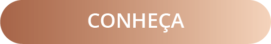

Olá, sou dermatologista com mais de 15 anos de experiência. Além de cuidar da estética, minha abordagem foca na saúde integrada do paciente. Como tricologista especializada em doenças capilares e do couro cabeludo há mais de 10 anos, ofereço atendimentos personalizados para adultos e crianças, visando proporcionar a melhor experiência possível. Confie em minha expertise e compromisso em fornecer os melhores cuidados dermatológicos, desde o diagnóstico até o tratamento eficaz, para alcançar uma pele saudável e uma aparência renovada.

 COSMIATRIA
COSMIATRIAExame de imagem não invasivo em que se aumenta a análise da pele de 10x a 150x, para uma melhor avaliação e diagnóstico. Realizada e gravada de modo que possa ser comparada no futuro.
Indicado para avaliação de pintas, sinais, doenças inflamatórias, e alterações das unhas, sendo muito importante para acompanhamento dos nevos congênitos ou adquiridos.Exame de imagem não invasivo em que se aumenta a análise do couro cabeludo de 10x a 150x para uma melhor avaliação e diagnóstico. Realizada e gravada de modo que possa ser comparada no futuro.
Exame indicado para diagnóstico e acompanhamento de alopecias e doenças do couro cabeludo e dos cabelos.Exame realizado para diagnóstico de alergias de pele. São aplicados conjuntos de substâncias para avaliação de reação da pele.
Obs: são aplicados adesivos a prova d’água e o banho normal é permitido.
O Prick test ou teste epicutâneo, é uma exame rápido e indolor que pode testar baterias de alergias a alimentos e aero-alérgenos que podem ser causadoras de alergias de pele ou pioradoras de doenças crônicas como psoríase e dermatite atópica.
Consiste num microagulhamento mais delicado realizado pela tecnologia Nanopore, aparelho espanhol que realiza 2000 perfurações por segundo, o que gera um resultado mais efetivo para estímulo de colágeno, melhora de cicatrizes, e penetração de ativos clareadores e de rejuvenescimento, com mais conforto e menos dor.
Terapia fotodinâmica para auxiliar nos tratamentos de acne, rosácea, melasma é rejuvenescimento de face e do colo. Sessões podem ser semanais, quinzenais e mensais, até a melhora do quadro, em média 2 a 3 meses.
Aplicação de agentes que destroem as camadas superficiais da pele, seguindo-se, então, da sua regeneração, com uma aparência geral melhorada. É uma forma também de acelerar a renovação da pele.
Indicada para amenizar linhas de expressão e também para diminuir a transpiração excessiva. Duração média de 03 a 06 meses para rugas de expressão e de 06 a 10 meses para hiperhidrose.
Sistema com microagulhas que funcionam como aberturas para a posterior entrada de medicamentos e renovação da pele de uma maneira mais profunda. Especialmente indicada para tratamento de cicatrizes de acne, rejuvenescimento e flacidez. Geralmente realizado de 30 em 30 dias.
Sistema com microagulhas que já fazem a entrega do medicamento dentro da pele. Bem tolerado e eficiente como drug delivery. Tem como boas indicações: alopecias, melasma, cicatrizes, sardas brancas, psoríase, tratamentos nas unhas. Geralmente realizado em poucas sessões a cada 30 dias
Pequena Cirurgia realizada com anestesia local utilizada para retirada de pequeno fragmento do corpo, rosto ou couro cabeludo para avaliação do Patologista no auxilio do diagnóstico.
“Conheça todas as teorias,
domine todas as técnicas,
mas ao tocar uma alma humana,
seja apenas outra alma humana.”